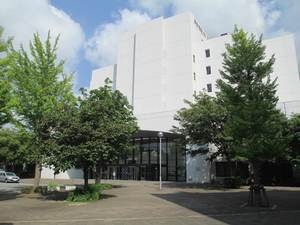

東京情報大学 キャンパス
Game School Area http://www.tuis.ac.jp
There are some laboratories with creative curriculums such as games and application laboratories among 14 laboratories of Tokyo University of Information Sciences. The students exhibit works produced through classes, lectures, club activities and research activities. It is a booth where you can feel "now" of our university. There are games that you can play in a short time, so please visit us.